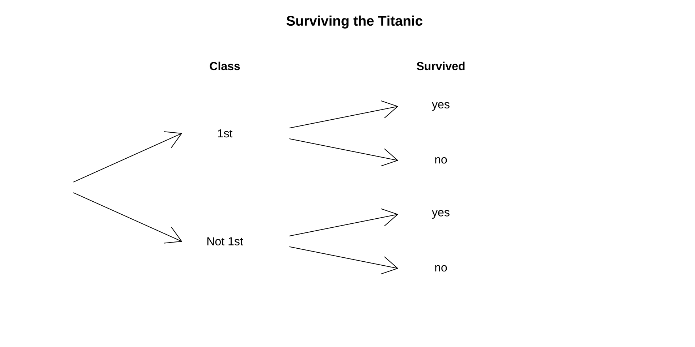
Unit 3 (part II): problems
Conditional Probabilities and Bayes Theorem
October 5, 2026
Acknowledgments
https://jsgosnell.github.io/cuny_biostats_book/content/chapters/Probability.html
Y. Brandvain
WS textbook
Check in
Outline
- Check in (course structure)
- Problem from last class
- Bayes Theorem problems
- Final 15 min: mid-semester check-in
From last week: Titanic Pr[survival] conditional on class with probability trees
Volunteers?
Example: Surviving the Titanic [1/]
Recall:
319 of the 2092 adults on the Titanic where in 1st class.
197 of the 319 1st class adults survived.
457 of the 1316 of the crew + the 2nd and 3rd class adults survived.
Example: Surviving the Titanic [2/]
\(Pr[\text{Adult 1st class}]=319/2092= 0.1524857\approx 0.152\)
\(Pr[\text{Adult Not 1st class}]=1-319/2092=0.8475143\approx 0.848\)
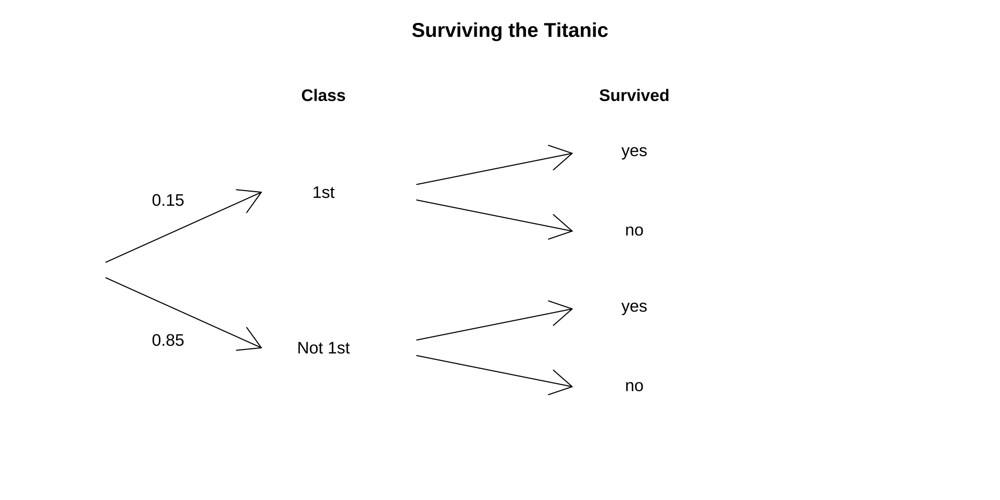
Example: Surviving the Titanic [2/]
\(Pr[\text{ Survive| Adult in 1st class}] = 197/319 = 0.6175549\approx 0.62\)
\(Pr[\text{ Survive| Adult NOT in 1st class}] = 457/1773 = 0.2577552\approx 0.26\)
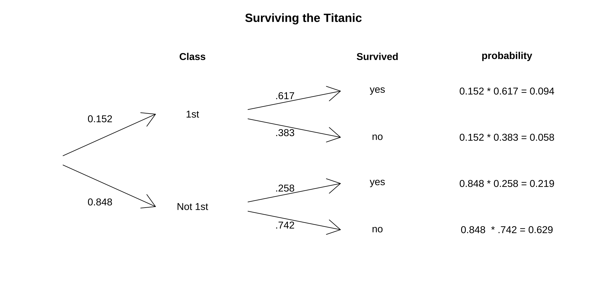
We find: \(Pr[survive]=0.093 + 0.219=0.312\)
In Summary
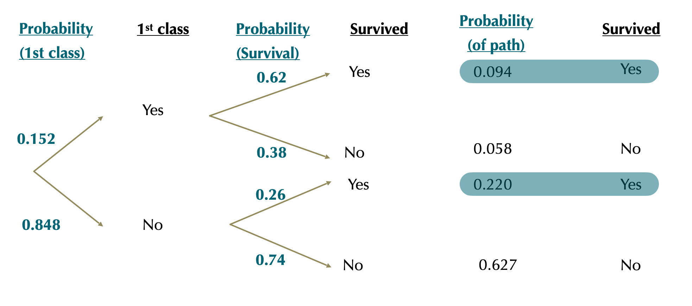
We recover \(Pr[\text{survive}]=0.094+0.220=0.314\).
Bayes’ Theorem: Titanic Example [1/]
Find the probability that an adult survivor was in 1st class.
319 of the 2092 adults on the Titanic where in 1st class.
197 of the 319 adults in 1st class survived.
457 of the other adults survived.
\(Pr[\text{1st class}|\text{Survive}]=?\)
Try it!
Bayes’ Theorem: Titanic Example [2/]
\(Pr[\text{1st class}|\text{Survive}]=\frac{Pr[\text{Survive}|\text{1st class}]\times Pr[\text{1st class}]}{Pr[\text{Survive}]}\)
\(Pr[\text{1st class}|\text{Survive}]=\frac{197/319\times(319/2092)}{(197+457)/2092}=0.30\)
Problems
Practice 1: Do you agree?

XKCD Conditional Risk: The annual death rate among people who know that statistics is one is six.
Practice 2 (trick question!)
Recent statistics indicate that 30% of Americans are overweight. We also know that about 50% of Americans are female. Based on this information, what is the proportion of Americans who are overweight or female?
Practice 3:
Within the United States, approximately 11.25% of the population is left‑handed. Of the males, 12.6% are left‑handed, compared to only 9.9% of the females. If a person is selected at random, what is the probability that the selected person is a left‑handed male? Assume that the probability of selecting a male is the same as selecting a female.
Practice 4
Within the United States, approximately 11.25% of the population is left‑handed. Of the males, 12.6% are left‑handed, compared to only 9.9% of the females. If a person is selected at random, what is the probability that the selected person is a female, given the person is right-handed?
Practice 5 (challenge):
What proportion of women (ages 40-49) whose 1st mammogram suggests they have breast cancer actually do have breast cancer?
About 20 in 1000 women (ages 40-49) have breast cancer.
A mammogram will reliably detect breast cancer in ~ 920 of every 1000 patients who truly have cancer. (this is called a “true positive” result)
A mammogram will incorrectly diagnose 100 of every 1000 cancer free patients as having cancer. (this is called a “false positive” result)
Let C and NC be the cancer statuses and + and - the test results.
| + | - | |
|---|---|---|
| C | TP | FN |
| NC | FP | TN |
Solution 1
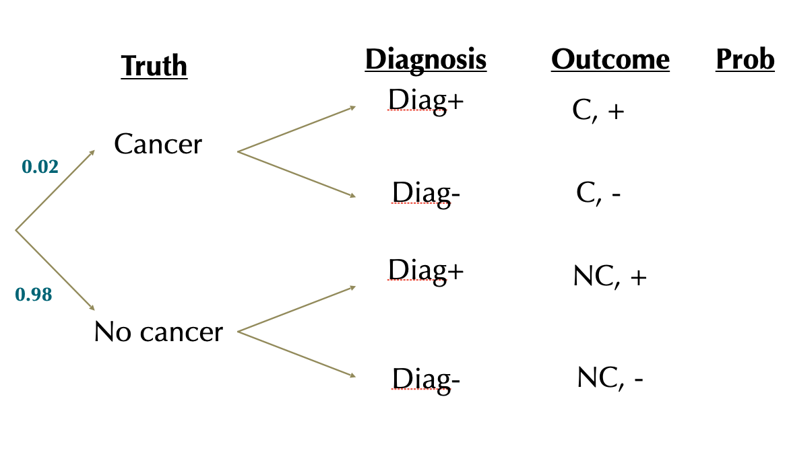
Solution 1
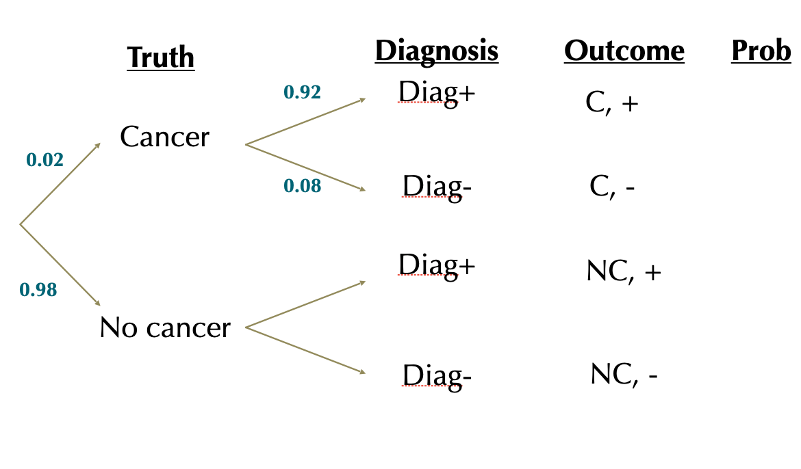
Solution 1
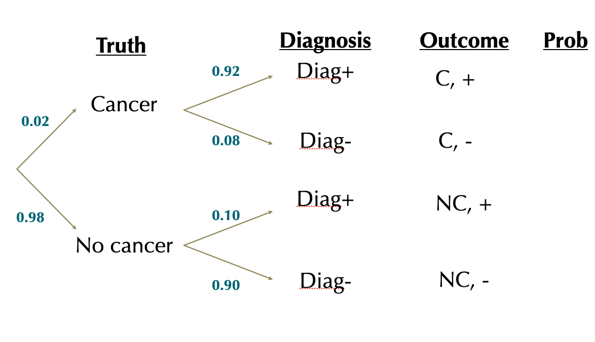
Solution 1
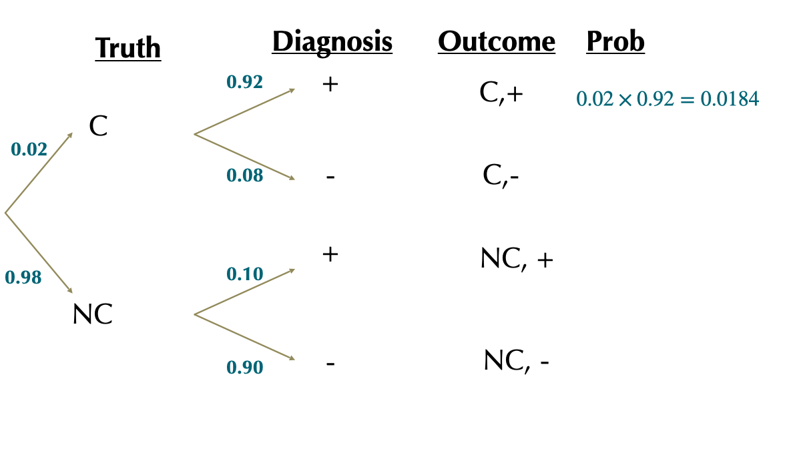
Solution 1
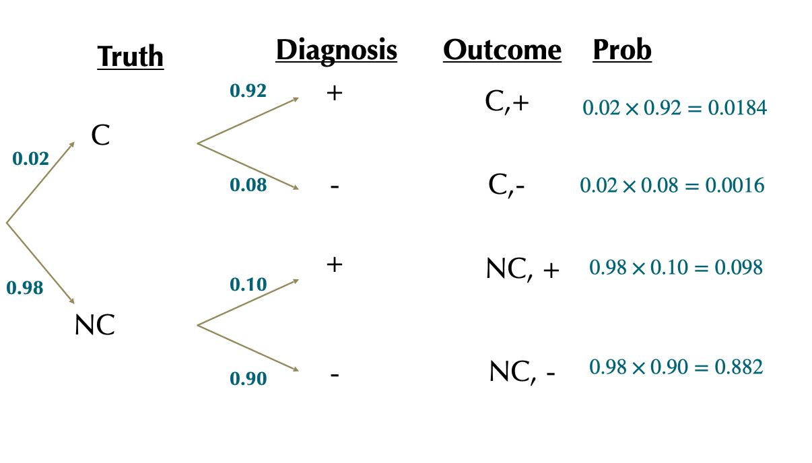
Solution 1
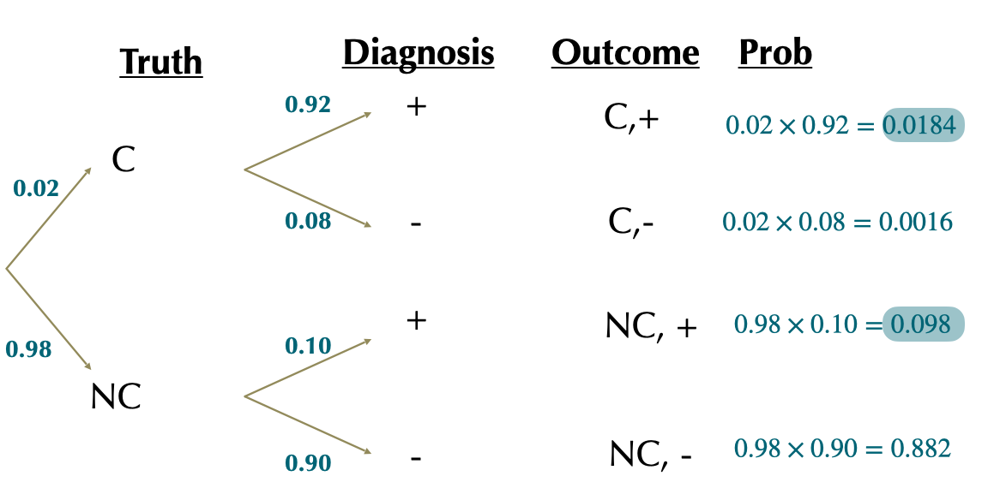
\(Pr[+]=0.0184+0.098=0.1164\)
Proportion of + tests where there actually is cancer is:
\(= \frac{Pr[C,+]}{Pr[+]}=\frac{0.0184}{0.1164}=0.1578\)
Solution 2: Bayes’ Theorem
Let \(C\) and \(NC\) be the cancer statuses and \(+\) and \(-\) the test results.
\(Pr[C]=0.02\)
\(Pr[NC]=1-0.02=0.98\)
\(Pr[+|C]=0.92\)
\(Pr[+|NC]=0.10\)
What we want: \(Pr[C|+]\) or, in other words, the proportion of positive test cases that are actually true positives
So we want: \(Pr[C|+]=\frac{Pr[+|C]\times Pr[C]}{Pr[+]}\)
We have \(Pr[+|C], Pr[C]\), but what about \(Pr[+]\)?
Solution 2: Bayes’ Theorem
So we want: \(Pr[C|+]=\frac{Pr[+|C]\times Pr[C]}{Pr[+]}\)
We have \(Pr[+|C], Pr[C]\), but what about \(Pr[+]\)?
Law of total probability: \(Pr[+]=Pr[+|C]\times Pr[C]+(Pr[+|NC]\times Pr[NC]\)
\(Pr[+]= (0.92\times0.02)+(0.10\times0.98)=0.0184+0.098=0.1164\)
Now we can use Bayes’ theorem: \(Pr[C|+]=\frac{Pr[+|C]\times Pr[C]}{Pr[+]}\)
\(Pr[C|+]=\frac{0.92\times 0.02}{0.1164}=0.1580756\approx 0.158\)
Challenge: Monty Hall
The problem:
- You are a contestant in a show and you are presented with 3 doors. You must choose one door and you get to keep what’s behind it. Behind one of the doors is a fancy new car
- You pick one door (but the host doesn’t open it yet)
- At this point the host chooses one of the other two doors and opens it. There is a goat behind it.
- He now offers you the chance to choose the other door (the one you didn’t choose and hasn’t been opened yet). What do you do?
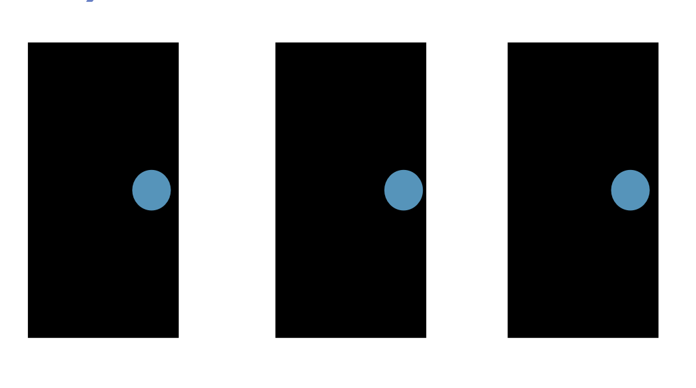
Vote before class on W! https://piazza.com/class/mtag5wjmrj557o/post/22 ## Cont.
- There are no tricks here, just probability
- All doors look identical.
- The host (who knows which door has the car) has a perfect poker face and reveals nothing
- Because the host knows where the car is, he would never have chosen the door that has the car.
In summary
Probability theory provides a foundation for rigorous statistics.
Application of simple rules of probability facilitates the generation of more complex predictions.
We can use Bayes’ Theorem to translate between probabilistic statements